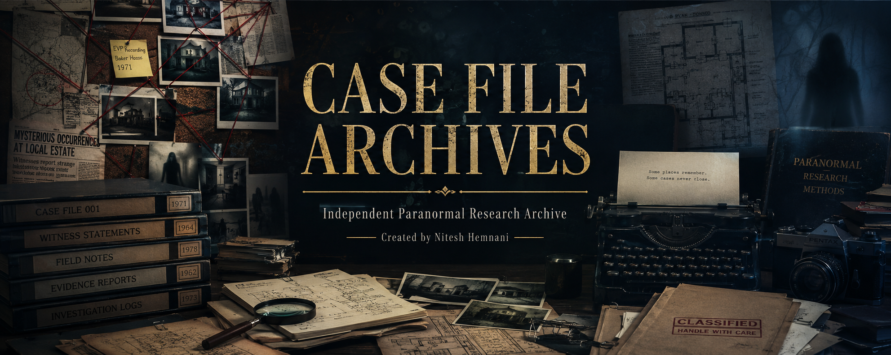

Independent Paranormal Research Archive
A comprehensive research archive examining the Enfield Poltergeist case through witness testimony, documented evidence, investigative reports, skeptical analysis, and paranormal interpretations.
Download Report"The evidence is extraordinary, but extraordinary claims require extraordinary scrutiny."
CASE FILE ARCHIVES Research Principle